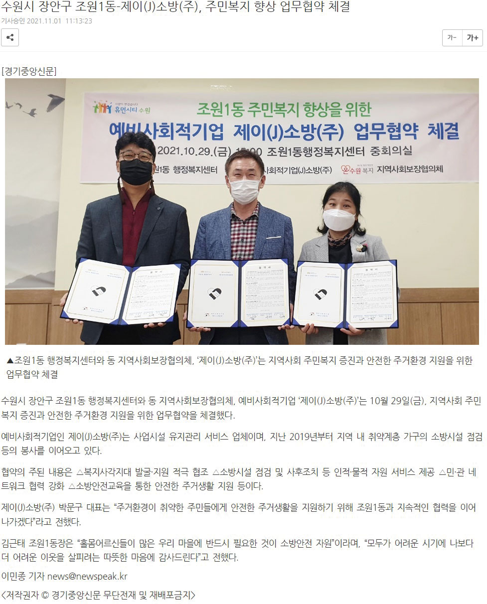
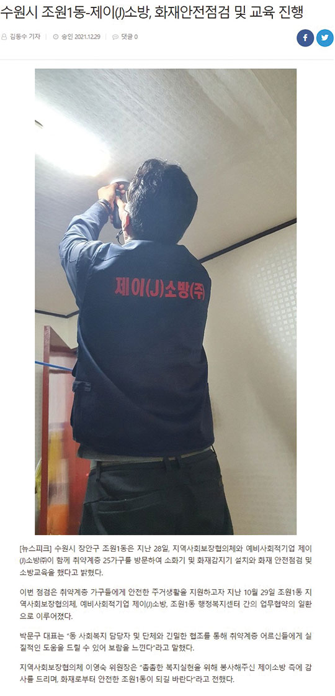
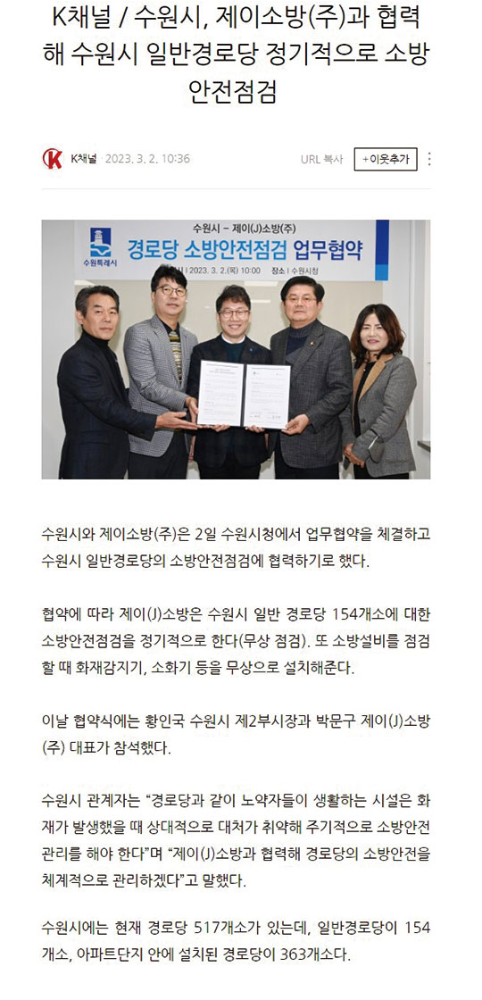

수행실적(소방공사, 소방점검)
수행실적(소방공사)
- 영통종합사회복지관
- 공사 일자 : 2023년
- 한국도로공사 충북본부 - 음성휴게소 소방공사
- 공사 일자 : 2023년
- 조원중학교 체육관 증축공사
- 공사 일자 : 2023년
- 신성초외 1교 방화구획 소방공사
- 공사 일자 : 2022년
- 수원농생명고등학교 보수공사
- 공사 일자 : 2022년
- 송화초등학교 소방공사
- 공사 일자 : 2022년
- 아주대학교
- 공사 일자 : 2021년 ~ 2022년
- 경기도 의료원 수원병원 소방공사
- 공사 일자 : 2020년
- 서울교통공사 - 5-8호선 소방시설 보수공사
- 공사 일자 : 2019년
- 경북대학교 소방시설 보수공사
- 공사 일자 : 2019년 ~ 2020년
수행실적(소방점검)
- 한국토지주택공사 -광명시흥 점검
- 점검 일자 : 2022년
- 아주대학교
- 점검 일자 : 2021년 ~ 2022년
- 한국서부발전㈜ 전국사옥 점검
- 점검 일자 : 2021년 ~ 2022년
- 한국토지주택공사 -부평 점검
- 점검 일자 : 2021년
- 지역난방공사 광교지사
- 점검 일자 : 2020년
- 시흥전력지사
- 점검 일자 : 2020년
- 지역난방공사 용인지사
- 점검 일자 : 2020년
- 경북대학교
- 점검 일자 : 2019년 ~ 2020년
- 지역난방공사 파주지사
- 점검 일자 : 2018년
- 당진화력발전소
- 점검 일자 : 2017년


